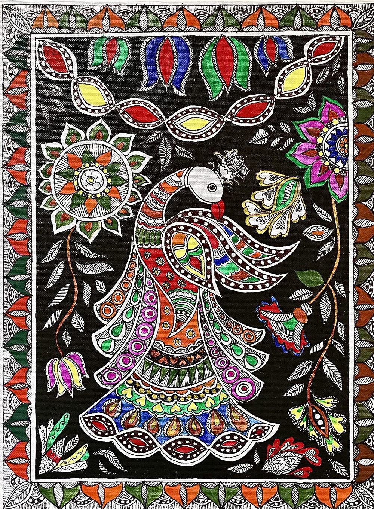

Madhubani painting, also referred to as Mithila Art (as it flourishes in the Mithila region of Bihar), is characterized by line drawings filled in by bright colours and contrasts or patterns. This style of painting has been traditionally done by the women of the region, though today men are also involved to meet the demand. These paintings are popular because of their tribal motifs and use of bright earthy colours. These paintings are done with mineral pigments prepared by the artists. The work is done on freshly plastered or a mud wall.
For commercial purposes, the work is now being done on paper, cloth, canvas etc. Cotton wrapped around a bamboo stick forms the brush. Black colour is obtained by mixing soot with cow dung; yellow from turmeric or pollen or lime and the milk of banyan leaves; blue from indigo; red from the kusam flower juice or red sandalwood; green from the leaves of the wood apple tree; white from rice powder; orange from palasha flowers. The colours are applied flat with no shading and no empty space is left.
Figures from nature & mythology are adapted to suit their style. The themes & designs widely painted are of Hindu deities such as Krishna, Rama, Siva, Durga, Lakshmi, Saraswati, Sun and Moon, Tulasi plant, court scenes, wedding scenes, social happenings etc. Floral, animal and bird motifs, geometrical designs are used to fill up all the gaps. The skill is handed down the generations, and hence the traditional designs and patterns are widely maintained.
In order to create a source of non-agricultural income, the All India Handicrafts Board and the Government of India have been encouraging the women artists to produce their traditional paintings on handmade paper for commercial sale. Madhubani painting has become a primary source of income for scores of families. The continuing market in this art throughout the world is a tribute to the resourcefulness of the women of Mithila who have successfully transferred their techniques of bhitti chitra or wall painting to the medium of paper.
